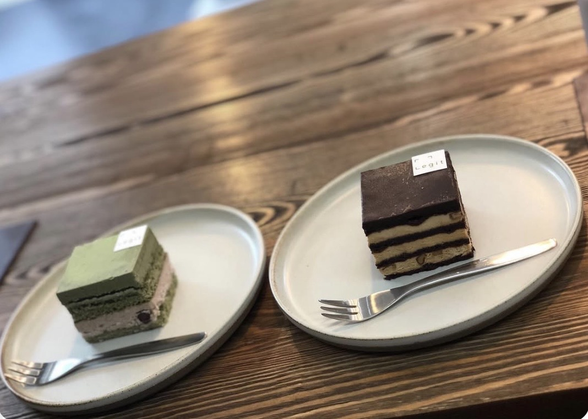
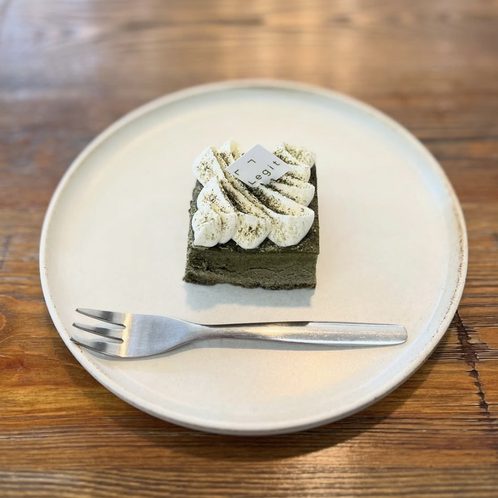
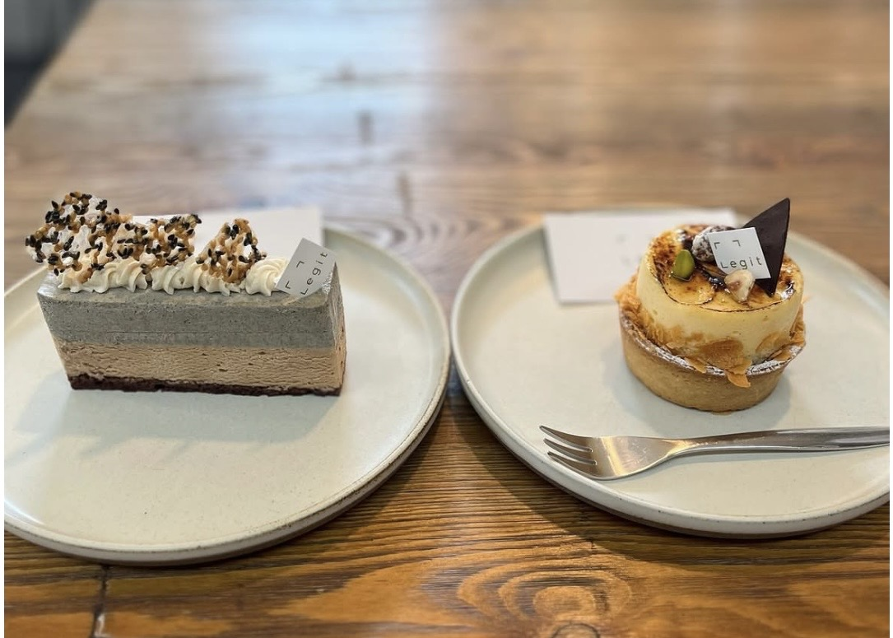

お店を知ってもらう導線
初めて店舗を知る人が、Google検索・Googleマップ・Instagramなどから 店舗情報へたどり着けるかを確認しました。
- 駅から徒歩約1分という立地は、来店理由として伝えやすいポイント。
- Instagramを店舗情報の確認先として活用できる。
- GoogleマップとInstagramを組み合わせることで、検索からSNSへ情報を深掘りしてもらう導線を作りやすい。
DIAGNOSIS CASE
山陽小野田市のCAFE Legit（リジット）を、 初めてお店を知るお客様の目線から、 Instagram・Googleマップ・Web導線をチェックしました。
ABOUT THIS DIAGNOSIS
今回は「お店を知らない人が、検索やSNSをきっかけに店舗を知り、 他のお店と比較し、実際の来店につながるまで」を想定して確認しました。
DIAGNOSIS RESULT
「発見 → 比較 → 来店」の3段階で確認しました。
初めて店舗を知る人が、Google検索・Googleマップ・Instagramなどから 店舗情報へたどり着けるかを確認しました。
店舗を見つけた後、他のお店と比較するときに、 店内の雰囲気や料理の魅力が十分伝わるかを確認しました。
「行ってみよう」と思った人が、実際に来店するために必要な情報へ スムーズにたどり着けるかを確認しました。
SHOP PHOTO
店舗の料理やスイーツなど、実際の写真を使って魅力を紹介しています。




IMPROVEMENT
店舗集客の導線をさらに分かりやすくするために、 今回確認したポイントを整理しました。
Googleマップで店舗を知った人が、 Instagramで料理や店内の雰囲気を確認できる流れを 分かりやすくすると、来店前の情報収集がしやすくなります。
店舗の特徴・場所・営業時間・アクセスなど、 初めて見る人が知りたい情報をプロフィール周辺で すぐ確認できるように整理すると、店舗理解につながります。
料理写真だけでなく、店内・外観・スイーツ・利用シーンなどを 組み合わせることで、「どんなお店なのか」を 初めて見る人にも伝えやすくなります。
住所・アクセス・営業時間・Instagramなど、 来店前に必要になる情報を一つの導線にまとめることで、 「調べる→行く」までの手間を減らせます。
SUMMARY
今回は、CAFE Legit（リジット）を 「初めて店舗を知るお客様」の視点から確認しました。
店舗の魅力そのものだけではなく、 「見つけてもらう → 比較してもらう → 来店してもらう」 までの情報導線を整理することが、店舗集客では重要です。
このように、店舗ごとに現在のWeb・SNS導線を確認し、 改善できるポイントを整理することが今回の無料診断の目的です。